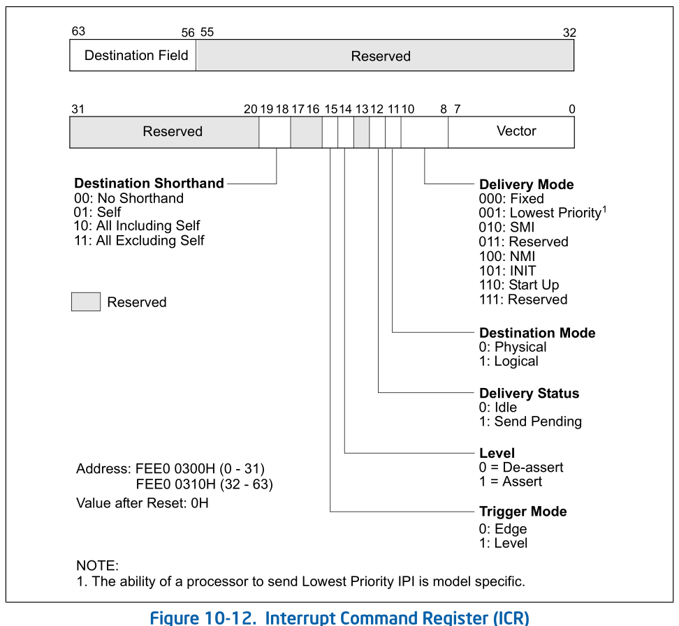
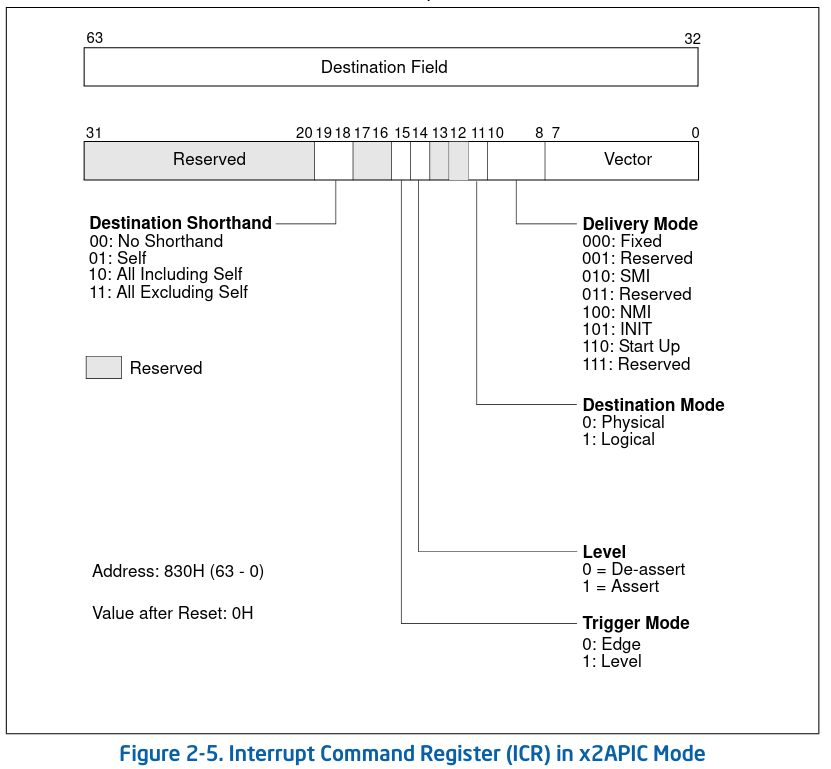

x2apic
x2apic ICR
和xapic一样，x2apic可以通过写Interrupt Command Register (ICR) 寄存器来生成一个IPI。
在xapic模式中，ICR包含一个delivery status bit(bit 12)。 该位会指示 delivery 该interrupt 的status。该位在软件层面 是只读的。下面是xapic的位图
。
关于delivery status在手册中的解释:
Delivery Status (Read Only)
Indicates the IPI delivery status, as follows:
0 (Idle)
Indicates that this local APIC has completed sending any previous IPIs.
1 (Send Pending)
Indicates that this local APIC has not completed sending the last IPI.
- 0: 表示当前local APIC 之前发送的任何IPIs都已经被completed了。
- 1: 表示当前local apic 最后发送的IPI还未被completed。
当interrupt 已经被transmiteed 时，该位会被清空。对于xapic，软件在发送ipi之前需要
poll 该位，直到该位被clear。相似的，如果这个发送动作依赖interrupt 从local xAPIC
units上发出，系统软件需要 busy-wait delivery status bit 被清空。
但是在x2APIC mode中，对于ICR的编程被简化了。只需要一个64-bits的ICR write 就可以 完成一次dispatch interrupt

在x2apic中，对于WRMSR ICR 指令completion并不能保证dispatch的interrupt 已经被 target processor received, 如果system software usage如要这个guarantee, 系统软件 应该明确的验证interrupt delivery 到了 指令的target上。（通过一种交互的软件机制) 例如, 可以在该中断的interrupt service routing 中去更新一个内存区域，从而让 dispatch的software 去验证memory localtion 是否被更新来验证中断是否到达。
NOTE
所以看起来说，x2apic 在硬件流程上没有做什么改动，怀疑是xapic
delivery status不好用，软件层面都是通过软件方式交互的，所以在x2apic实现中把delivery status删除了。